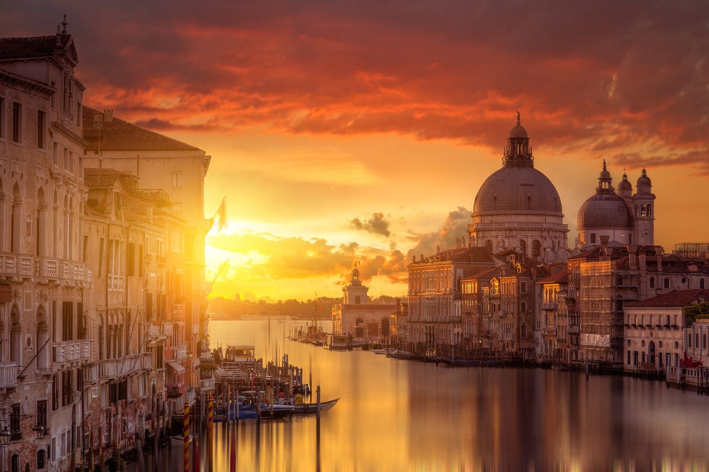

Itinerary snapshot · Wed Oct 21Planned whereabouts
Today · Wednesday
Santorini, Greece
Wed Oct 21, 2026: Odyssey of the Seas is in port at Santorini, 7:00 AM–10:00 PM, for a self-guided Fira day — tender ashore and the cable car up (€10), the Fira promenade and cathedral, then the caldera-edge walk toward Firostefani and Imerovigli (Skaros Rock). Lunch is at Mama's House on the Main Square — traditional Greek, moussaka (the day's featured meal) — followed by the Prehistoric Museum of Thera, then back down by about 8 PM (the return cable-car queues can be long). Sunset drinks on the PK Cocktail Bar terrace, table booked 5:45–8:15 PM. The €12 cruise-passenger island fee (October shoulder rate) is auto-added to the onboard account. Local buy: Vinsanto + Assyrtiko. Local food: tomatokeftedes. Tomorrow (Thu Oct 22): Mykonos, Greece — 7:00 AM–5:00 PM, self-guided Chora walking day (Old Port → Paraportiani → Little Venice → Kato Mili windmills, lunch at Kastro's).
21
In port 7:00 AM–10:00 PM · Aboard Odyssey of the SeasSunset drinks at PK Cocktail Bar, 5:45–8:15 PM (booked).

Journey began inVenezia
45.4408° N 12.3155° E
What’s next
The Odyssey's Greek Isles & Italy sailing runs through the Aegean before the transatlantic crossing begins in Civitavecchia.
Wed · Oct 21
Santorini
A self-guided Fira day, ending at PK Cocktail Bar.
Thu · Oct 22
Mykonos
A self-guided walk through Chora.
Fri · Oct 23
At sea
Another day aboard en route to Naples.
Sat · Oct 24
Naples
Herculaneum excursion.
Sun · Oct 25
Rome (Civitavecchia), Italy
Odyssey arrives 5:00 AM; the 14-night Spain & Portugal transatlantic crossing departs 5:00 PM.
Mon · Oct 26
La Spezia, Italy
7:00 AM–8:00 PM port day: self-guided Cinque Terre by train.
The long way home
Three back-to-back voyages carry Patrick from Civitavecchia to New York Harbor by way of Greece, Italy, Iberia, the Azores, and the Bahamas.
Eastern & Southern CaribbeanTwo voyages from New Jersey
Florida & the BahamasMiami, Estero and two short cruises
Pacific crossingHawaii, Australia, New Zealand and the South Pacific
Spain & the MediterraneanBarcelona, the western Med and Andalusia
AlaskaFairbanks to Vancouver by road, rail and sea
Panama CanalVancouver down the Pacific coast to San Diego, through the Canal to Tampa, then the eastern Caribbean
JapanShanghai to Seattle via Tokyo & Kyoto
Where was Patrick
Built from Patrick’s Day One journal, this history runs newest-first through October 2026 — journal entries up to Oct 19 — including recent days in Messina, Split, Venice, Ravenna, Kotor, Santorini, Athens and at sea. Entries tagged #private are excluded.
At sea
At sea, aboard Odyssey of the Seas. A full cruising day in the Aegean, sailing toward Santorini, Greece (port day tomorrow).
5,399 steps · 2.8 mi · 5 flights climbed
1 of 7
Messina — Mt Etna & Taormina
Messina. Small-group tour to Mt Etna and Taormina. Weather wasn't great — no view of the sea or the top of the volcano, no Etna view from Taormina — but at 6000ft we were mostly above the clouds and rain, no active lava flow, and hiking the dormant craters was worth the long drive. The highway tunnels are pretty amazing. Taormina: sweets, pistachio and chocolate bars at the same shops as last time; a bland lunch I should have checked reviews for; public gardens (they were shooting a movie or TV show) — pleasant, but not as amazing as the theater. Back at the ship after sunset, about 7pm.
17,052 steps · 8.7 mi · 44 flights climbed
Odyssey embarkation, Civitavecchia
Odyssey embarkation. €2.70 latte and croissant at the big kiosk, morning sun on the roof patio near the fort. Walked to the shuttles at 9:45, terminal by 10am — priority luggage drop and a Suite-card swap put me in the first boarding group at 10:30 (one of the few places the full Royal Plus benefits are recognized). Muster, towel station, lime & coconut, then a sunny pool-deck recliner until rooms were ready.
7,618 steps · 4.0 mi · 16 flights climbed
Ravenna → Civitavecchia
Ravenna to Civitavecchia. Normal debark routine — latest bus to Ravenna station. Trains: Ravenna→Bologna (Imola stop — unexpected, kind of cool from an F1 perspective), Bologna→Roma Termini high-speed in business class (surprise Florence stop — didn't realize how close it was to Bologna). Train late, but made the 10-minute Rome transfer with time to spare. Museum Guest House — same room as last time. Strada for dinner: pizza loaded with cheese, should have gone for the smashed chicken. In bed before 9pm.
7,640 steps · 3.9 mi · 4 flights climbed
1 of 7
Split, Croatia
Split. Viator tour: Diocletian's palace — unlike the palace tour I took in May, this time I learned who Diocletian was and why the palace is in Split. Not as stunning as the story, but impressive for 1700 years old. Then 45 minutes to Trogir ('pocket Venice'): marbled alleys, a very good prosciutto sandwich at an outdoor café, bus back in Split at 3pm. Morning in the casino: got my point balance over 2,000 — down over $200 at times, walked away up $200. Evening: Gold Art Duo headliner (seen before, stayed for most). First free room-service breakfast — wouldn't do it again.
9,598 steps · 5.2 mi · 10 flights climbed
1 of 3
Sea day
Sea day, morning. It was a mistake not heading back out into Piraeus after the tour — the walk wasn't far and there was plenty of time. Weather improved slightly, sun poking through. Skipped the headliner for another early bedtime; awake at 5am as a result and caught the sunrise. Canceled next week's Santorini beach club in favor of unstructured time in Fira, possibly staying for the 6:30pm sunset. Tried to reserve a table — payment went through but the site said it failed. Not much planned; will finally start the book.
4,653 steps · 2.5 mi · 8 flights climbed
1 of 6
Athens, Greece
Athens. First time here — Acropolis ship excursion as the must-do checklist item. The bus ride's "highlights of Athens" were extremely limited, but the guide ("shortie") made up for it with history and Greek mythology. Weather beat the forecast: occasional light rain and breeze, a shell without umbrella was enough. The climb wasn't bad. Headed back down about 40 minutes early and wandered until I found espresso. The ship was too far from anything at the terminal to make the walk worthwhile. Tonight's headliner is Tony Tillman — at least the third cruise with him on it — probably skipping for an early night before the sea day.
7,194 steps · 4.0 mi · 17 flights climbed
1 of 8
Santorini, Greece
Santorini. Royal Beach Club first thing — 7am meeting made the morning rushed since Windjammer didn't open until 6:30. At the club by 8:15; getting off the tender was interesting with rolling seas rocking the boat. Chill vibe, decent free beer but kept it light with the Oia and Fira tours after. Lunch at the club was good — chicken skewers and Greek salad the favorites, plus good Greek desserts. Then Oia (about a 30-minute drive) — nearly identical to Fira with fewer alleyways to explore; wandered shops, sat with a beer in the ~90 minutes at each. Decent enough day to keep the same tour booked for next week.
11,278 steps · 6.3 mi · 19 flights climbed
Sea day
Sea day. Morning working with Muse on future trips. Loyalty event lightly attended — "the numbers show why" — though most of the Pinnacles were there. Pizza, a casino-bar drink, the ice-skating show (Four Seasons theme, easy to follow), the belly flop, then sun on deck. Evening: back in the casino losing too much money. But a Serenade sailing looks possible before the Panama crossing — kills the San Diego exploration, adds an overnight in San Francisco. Santorini beach club meets at 7am tomorrow.
4,909 steps · 2.6 mi · 14 flights climbed
1 of 9
Kotor, Montenegro
Kotor, Montenegro. Scenic morning sail through the bay to the anchorage — weather not great, not terrible. Royal tour: bus to Perast, ferry to Our Lady of the Rocks, very prominent entering the bay. Would have liked a waterfront lunch but the tour clock was ticking. Back to Kotor for the old-city walking tour — light rain killed the headset, and after 30 minutes standing in the rain with sciatica, dropped the tour for beers. Wandered the old city instead — every alley a surprise — rain stopped, cats came out. Would return for the old city and the hike up to the church. Tender lines the only downside (peak around 5pm, last tender 7pm). Love & Marriage in the evening — left after the first half.
10,903 steps · 6.2 mi · 20 flights climbed
1 of 9
Venice → Ravenna → Explorer of the Seas
Venice to Ravenna to Explorer. Morning: beer and food at Laguna ("enjoyable location"), a spritz to check off the list, gelato, buranelli cookies from a market stop, espresso and croissant at Dolce Vita. Packed out and bussed from Tronchetto — five busloads of cruisers. Ravenna: at the port by 2pm, slow security with all the buses arriving at once, then quick. Rooms ready — muster done, passport in the safe. Errands: booked the first Japan 2028 cruise, cut the Coke Zero amenity rewards, gave up the fixed MDR seat, sorted Ravenna station transport. The NextCruise woman, Alessandra, was on Brilliance earlier this year — recognized her. Casino: back-to-back wins, OBC turned to cash, up $400 including OBC. ("The trick is not to lose it all!") Tonight's show was repeat ventriloquist Celia Muñoz — left early, as expected. Cruise director Michelle (on Odyssey May last year) speaks many languages; ran into a Brilliance bartender in the Windjammer. Halloween balloon drop — stayed awake and mostly sober.
9,621 steps · 5.1 mi · 24 flights climbed
1 of 7
Murano, Burano & Venice
Dinner last night, since I did go out: anchovies and onions to start, cuttlefish with squid ink for main — both flagged typical Venetian, both ok, nothing I'd ever seek out again. Long walk to the tour meeting point — the shorter route needed a Grand Canal transit, so I took the bridge route. Made it on time. The gallery after the glass-making demo was amazing, no pictures allowed — if I read the prices right, a drinking glass was over €100. Short walk around Murano; sciatica acting up (Aleve tomorrow). Burano was the better stop by far — no idea why Murano gets more attention. Shops lining the main street and canal; with sciatica still bothering me I found a café for a bite and beers, then a beer-focused café for one more. One photo: a house tracking flood waters — November 2019 was a bad month.
12,769 steps · 6.5 mi · 12 flights climbed
1 of 11
Venice
Up early for the 8:30 tour — coffee and a croissant on the way, the only one with a latte. Small group of 16; the guide's a historian and former teacher, 30 years in Venice — a firehose of information. Great energy and love for the city, but I stopped retaining anything after the second hour. Rialto market and bridge, gondola ride, St Mark's and the Doge's Palace — 6 hours total. Bought a Hard Rock shirt right by the gondola. Seagulls inside the Rialto fish market — saw one get lucky and steal a fish. Morning threatened rain; sun was out when the tour ended. Wandered back with beer stops and an ATM stop, destination Punta della Dogana — the point of land at the Grand Canal entrance. Favorite stop: Laguna Bar, facing the setting sun with enough foot traffic to be interesting. Big pizza slice at lunch; the hotel does free food at 6:30. But I should go out.
1 of 5
Madrid → Bologna → Venice
Flight 45 minutes early, big tailwind — 1050kph ground speed. Expecting the usual EES issue, but the kiosk sent me to the gate (2nd try) and the e-gate worked (2nd try, agent holding the passport on the scanner). Running low on Schengen days in the 180 window, but plenty by next May. Half-liter airport beer: €5. Then Bologna: bad rudder, emergency landing where there were no crosswinds. Fire trucks lined the runway; it was a very normal landing, just not at the right airport. Through immigration again — the agent stared at my data on the screen a while before waving me through. Buses to Venice, about 2 hours; hopefully at the hotel by 6pm, and hopefully the luggage made it. Underway just before 6pm. At the hotel around 7 — passport handed over, welcome drink and finger food on offer, a welcoming room tour. Debated going out, but with a 7:30am departure tomorrow and a 6am alarm, I opened the chilled Prosecco instead.
Travel day
Nashua to Boston to Madrid to Venice. Checked bag cost $120 — guess it wasn't included in the mileage reward. Terminal E in Boston isn't terrible even without lounge access. TSA started chitchat about Royal because of the shirt I was wearing — always takes me longer than it should to realize it's just chitchat.
Trip archive
Earlier journeys, kept day by day — every journal entry and photo from the summer’s travels.
Jul 22 to Aug 29, 2026 · Madrid and Spain, the transatlantic crossing, Orlando and Universal Studios, Utopia of the Seas, and Rhapsody of the Seas ending in San Juan.
San Juan, Puerto Rico
Waiting on a 2pm flight. The Escape Lounge is at tarmac level — very unusual. Realized today I need some way of storing where I am each day, or I'll never remember what I thought or even where I was. (This is the entry that started the Where's Patrick? page.)
Dominica
"Bubbles and Waterfalls" — a pretty amazing day. Viator tour starting with snorkeling at Champagne Reef, partly over an actively venting volcano: bubbles coming up from the bottom, the water over the vents very warm. Then a gorge swim through to a waterfall you could step out into — a Pirates of the Caribbean 2 scene was filmed there. Finished at volcanic sulfur baths and rode back to the cabin smelling totally of sulfur. Lush, green, laid-back — I'd go back.
St Maarten
St Maarten. Off the ship early for a walk into town — only two ships in (usually at least four). Walked the boardwalk end to end, back through an empty main shopping street. Piranha Joe's for yet another shirt, then Marley's: a bucket of beer plus a few more, lunch, good chat with staff and guests. Cheap. Definitely plans to return.
1 of 4
San Juan, Puerto Rico
San Juan. Boarding Rhapsody for a second week in the Caribbean.
CocoCay, Bahamas
CocoCay. Hideaway Beach — normal seat and routine, lunch on the island before heading back aboard. Forecast shows possible storms during the Rhapsody cruises out of San Juan.
1 of 4
Nassau, Bahamas
Nassau. Royal Beach Club — same chair as last time. Likes the food here; needs a lighter breakfast next visit.
Utopia of the Seas
Utopia of the Seas. Boarding day. Got put in a timeout after 26 drinks.
1 of 5
Universal Studios, Orlando
Universal Studios. Hotel shuttle got me to Islands of Adventure before the 9am opening — one of the first in. Spider-Man first, then the Dudley Do-Right flume, Skull Island, and Harry Potter and the Forbidden Journey. Took the Hogwarts Express to the original park; the walk into the Harry Potter area was impressive. Butterbeer and Escape from Gringotts. Done riding by ~1pm — lunch at the world's largest Hard Rock (good merch selection), then bar-hopped CityWalk. Voodoo Donuts: the berry one and the enormous apple fritter. No Universal merch appealed.
Orlando, Florida
Orlando. Debark day — immigration was horrible: in the debark line at 8:30am, didn't make the car rental pickup until 11am. No facial scans, so everyone was processed manually. Hotel is decent: pleasant reception, upgraded to a top-floor lake view. Walked around the lake, stopping at a bar along the way. (Don't recall where I ate — writing this in mid-October.)
Sea day
Sea day, still great weather — nearly the end of the crossing with one sea day left. Diverted to Bermuda (again!) to offload a medical emergency.
Sea day
Sea day. Nice weather.
1 of 3
Sea day
Sea day, still crossing. Seas are calm.
Sea day
Sea day, still crossing. Fiddler was good.
Transatlantic crossing
Sea day — first day of the crossing. Big loyalty numbers.
1 of 3
Cádiz, Spain
I'd liked Cádiz on a short visit with Sean long ago, so I stayed in Cádiz instead of spending the day on a bus to Seville or Jerez. Started with a Viator walking tour that meandered through the city nicely — only a few hours, leaving plenty of time for wandering, beers, and lunch before heading back to the ship to begin the crossing.
Málaga, Spain
Morning with Sean and Iza, afternoon with Sean after dropping Iza at work. Drove to Nerja and wandered, including the Balcony of Europe. Lunch up in the hill town of Frigiliana — after exploring the alleyways on foot all the way up, we settled at a restaurant in Plaza de las Tres Culturas. Back near the port after lunch for a smoothie and beers before the ship. The democracy debate that started in May continued.
1 of 6
Cartagena, Spain
Tour starting in Murcia — guided tour plus free time to explore, then a short walking tour back in Cartagena. I left the tour near its end in Plaza de San Francisco for tapas and beer outdoors.
1 of 4
Palma de Mallorca, Spain
Did a Viator tour that was kind of interesting — except the guide was upset he wasn't allowed to give the tour he wanted, and spent a lot of time on the phone arguing with the tour company while we just stood around. Very odd. We did get to Valldemossa and saw a bit of Palma, but next time I'd rather walk from the ship into town and spend the day exploring, shopping, and eating. Long walk, but very doable.
1 of 3
Barcelona, Spain
Boarding day. I'd planned to walk to the shuttle bus for the terminals at the World Trade Center, but traffic was at an absolute standstill so I ended up walking the entire way — not terrible, just warm. Boarding was a little slower than normal with additional customs for the transatlantic. I always drink a bit more than I should on boarding day with the drink package, and today was no exception.
Madrid → Barcelona, Spain
Iryo fast train from Madrid to Barcelona — the station was an easy walk from the hotel, though it took me a bit to realize trains board from the upper level. Picked up a USB-to-USB-C charging cable after seeing someone else use one on the bus. Train is very fast — top speed shown was about 330kmh. Not much to see en route but pleasant enough. Metro to Plaça de Catalunya, walked to the H10 Madison. Burger at Craft Barcelona near the Catedral, then beers at La Cava Universal at the end of La Rambla.
1 of 6
Madrid, Spain
Early-entry guided tour at the Prado — we were the only people in it. Decent highlights tour, though I can't recall any of the details (adding this in October). I was the only one who'd also booked the palace tour, which essentially turned into a private walking tour from the Prado to the palace — the guide pointed out landmarks, lunch and dinner options, even an archaeological site behind my hotel's reception desk. Second time through the palace and I didn't recall much from the first. Drinks in an alley outside Plaza Mayor after, shopping on Gran Via — Primark had Patriots logo clothing on prominent display.
1 of 13
Segovia, Ávila & Toledo, Spain
Viator bus trip to three towns outside Madrid — Segovia, Ávila, Toledo. Great weather but still hot. Very long day with an early start and late return, a lot of time on the bus, but worth it. Decent burger for lunch in a plaza outside the castle in Ávila.
1 of 3
Madrid, Spain
Arrival day after the overnight business-class flight. Passport control was odd — told me I didn't need to register, but then the gates didn't open. Metro from the airport to Puerta del Sol and the NH Collection Palacio de Tepa. Very hot. Drinks and food outside in Plaza de Santa Ana — very touristy, but nice to sit outside.
Sep 2 to Sep 28, 2026 · The Bayonne sailing — New England, Canada and Bermuda — followed by the Virgin Voyages sailing out of Miami.
Miami → Boston
Up at 5am, packed, showered, coffee at 6. Hung in the cabin, then the empty Sip Lounge — watched the SpaceX rocket launch. Off the ship about 9:30 to queue for the 10:30 bus; on board 9:45 but held till 10:30 for two missing passengers. Flight delay notice: about 2 hours, arriving 7:20pm — though FlightAware had us coming in after midnight. Curious if they plan to board and pull back, then hold in Miami without telling us till we're locked in. Delay stretched past 3 hours, blamed on Boston air traffic management. On board — 8:33pm arrival now. Overall, a decent vacation month. Gambled too much, didn't take enough pictures, bought too many clothes — but no major mistakes. Hard to believe this trip started weeks ago heading north to Boston and Canada, and I've spent the last dozen days in Florida and the Caribbean.
Bimini
Up early for coffee, first tram to the beach club. Party pool, planning to leave after lunch. Nicer day than last cruise — hot in direct sun. Good conversation with chair neighbors both sides. Lunch: ceviche, watermelon salad, rice & beans (with sriracha, of course) — decent, definitely better without the fried things. Left about 1, stopped for a shirt at Fisherman's Village — expensive, nearly $50. Back to the pool; friendly bar staff, got to know a few over the two cruises. Grab & go dinner — noodle place closes early, nothing else appealed; skipped Opa hour, didn't want to risk the crowd. Finished Unabomber, bed before 9. Extra afternoon coffee kept me tossing a bit.
Sea day
Didn't get out of bed till after 8 — up earlier, just didn't feel like it. Coffee in the Galley, several hours at the pool. Hot. The trio of women from the grog walk showed up, plus the strange guy. Not liking the flow of Accomplice to the Villain — might leave it behind unfinished. Afternoon in the hammock, some streaming. 5:30 dinner at Pink Agave: guacamole and ribeye, good not amazing — server Marvelous was very nice. Started Unabomber, lights out by 9.
Key West & sail-away
Sail away, then Key West. Wings and burger at Razzle Dazzle — quick, good. $300 in the casino, up to $400 on a $211 win, gave it all back. Debated the grog walk, went — not terrible, talked to people, but I'm poor at the card questions ("If you could go back in time, what year would you choose and why?" 1920?? No idea why that was my answer). Ended at the PJ party in my moose caboose jammies, up till midnight. One of the grog walkers recognized me by name in the morning — confused me. Key West: snorkeling canceled for low signups, so the day was wide open. Off at 9, Duval and the Truman Annex, some sciatic pain. The Bull for beers — good vibe. Irish Kevin's: crowded, live music, less pleasant. Sloppy Joe's: bar nearly full but found a seat; a brother-sister pair next to me, he was Sean Patrick — loud music made it an awkward conversation. Last stop Island Dogs, nice and chill. Back about 3, pool deck, some grog-walk faces. Probably too much to drink — 10 beers in town plus a few on the ship. Pizza dinner. Missed another Scarlet Night.
Miami turnaround
Up at 5am, packed, coffee and fruit at 6, out before 7 to kill four hours — not sure Virgin offers a "get off for the day" option. Pool deck before noon, in the room and unpacked by 1:30, panini lunch. Several Ultras. Only reservations: Razzle Dazzle and Pink Agave. Got charged three times for the free WiFi — guest services visit later, they fixed it last cruise. Sad news: bad math on my part, I won't make Pinnacle before year end. One more cruise buying internet, potentially a double crystal for Odyssey, and it shifts one of the blocks off an Icon class.
Bimini
Bimini. 50/50 rain forecast, slight drizzle off the ship at 8:30. Tram to the club, seat by the loud pool — finished the book. Lunch: not as good as I remember, chose the wrong side (the crispy things weren't good; pretty sure it was a rice side last time). Jerk chicken thigh was good. Back on the tram about 1pm, before the pool gets really loud. New shop at Fisherman's Village — I'll get a shirt next cruise; five Bimini visits and not a single shirt. Room hadn't been serviced yet, odd. Pool deck with the next book. Coffee shop cookies are very different from Royal's but very good — chocolate chip and chocolate chip macadamia so far; need to try the chocolate one next cruise. Dinner at Extra Virgin: meatballs and pappardelle, good and quick — tables very close together, happy to leave as both sides filled. Lizzie Borden episode 2, bed at 9.
Sea day
Coffee and 7am breakfast, then the pool deck — the woman reading the same book series is directly in front again; we chat briefly when she finishes the first book. Pizza at noon: the truffle and egg I liked last time, still good — pepperoni next week if I do pizza again. Still so many galley spots untried. Afternoon reading in the hammock. Dinner at Pink Agave: guacamole, street corn, pescado — all good, though something disagreed with me later. Stopped at the manor food festival: free drinks but small and not great, one food item on a halved cucumber — not good. Left after 10–15 minutes. The Mind Mangler show was cancelled; watched Disclosure Day, asleep by 9.
Grand Turk
Thunderstorms early, cloudy skies. Off at 8:30 for exploring and shopping — Jack's Shack for a beer, looks like a decent day spot. Local beer $7.30. Dry fit and swim trunks from Piranha Joe's, trio of shirts from Ron Jon. Back aboard to drop the goods, grab towel and camera case. Margaritaville pool with a spicy margarita about 10:30. Snorkeling at 12:30: first spot had very clear water, lots of fish, nice variety — saw a small nurse shark. Second stop was only interesting for the huge abrupt depth change — coral reef, then just dark blue water. First stop better overall. Dinner at Razzle Dazzle: pork belly and fried chicken, long wait for the chicken but both good — an hour without dessert, pretty slow for Virgin. Scarlet Night tonight, but I'll just watch a movie.
Sea day
Sea day. Sometime Friday night I fell on the side table in my hotel room — not sure what happened, but I definitely bruised a rib. Painful to roll over in bed, coughing very uncomfortable. Coffee and fruit for breakfast, probably a poke bowl for lunch, no dinner. Pool deck finishing my first book — the woman in front of me is reading One Dark Window, which I finished last month. The Dock House was terrible: 15 minutes to take the order, 30 minutes with no food, had to flag a server who grabbed it after two tries. Glad it was free. Shrimp good as always; the swordfish was dry and tasteless in a small pita. Guest services fixed the WiFi charge. Early bed, before 8pm.
Miami → Virgin
Miami at night, then boarding day. Rooftop pool bar was dead, so I headed to Brickell — the intersection where CitizenM sits. Ended up in One K for cocktails: $50 for two drinks, and I'm not sure why — probably should've checked whether a third got added. Boarding day: hotel till noon checkout, Uber at 12:30 (driver 15 early). Virgin's terminal is first so no port traffic; priority line 12:40, check-in exactly 1pm, Rock Star boarding 1:30. Coffee and a burger, unpacked — don't love the regular bathroom's lack of storage. Managed 5:30 tables at all 4 restaurants I wanted; hoping for the same next sailing. Not sure I have premium internet — only the basic package was showing.
1 of 4
Miami
Booked the Little Havana food & cultural tour for 11:30 — start point about 2 miles out, so I walked over via a Starbucks. Very warm and humid. Tour was larger than expected for a weekday off-season — maybe it's always tourist season in Miami. Guide was a native Cuban, 13 years in Miami — easy to understand, entertaining, engaging. Good mix of food and history: empanadas, cafecito, mojito, Cuban sandwich, guava pastry, mango juice, churro. Some drizzle, no downpours. Trolley back to Brickell, beers at 305 Sports before the hotel.
Bayonne → Miami
Out of the room by 7, off the boat about 7:45. Bus to Newark left late — 8:45 — arriving 9:30 with lots of port congestion. Terminal A was quite nice: easy check-in, bag drop, security. The crystal block triggered a bag inspection, as expected. No lounge, decent seating; I'd booked an extra-legroom seat, which was ok. Flight on time but slow luggage. Metro rail to Brickell, walked to the hotel — decent room, no real view. Walked to CRAFT, extremely high Google ratings: beer and pizza, slow service, pizza just ok. Maybe the reviews are for breakfast? Grabbed beers for the room and watched Big Brother — double eviction.
Sea day
A bit of weather overnight — bags out on the upper floors this morning. Windy on deck, but I found a sheltered sunny seat at the rear of the top deck. Spent most of the time researching what a land tour ahead of a Seward cruise would entail — the southbound Alaska cruise is the best casino-award option, though I'd probably have to leave late August for the full Fairbanks-to-Seward train ride. Some HBO. Price is Right, then the 7pm comedy show — a comic I hadn't seen before, pretty good.
Bermuda / Hamilton
Let ChatGPT decide: beach or Hamilton — with iffy weather it chose Hamilton. 9am ferry ran 30 minutes late. Vineyard Vines first — expensive, noted things for a possible return; the shop just around the corner had a great selection at decent prices, bought 4 shirts. The AI-recommended pro sport shop sucked for tourist stuff. Church: ok. Meant to do Fort Hamilton but ended up below it — should've stayed on Church Street. Walked all of Front Street; the AI's bar picks weren't open at 11, so Flanagan's Irish — local Bermuda microbrew on tap, pretty good. Hog Penny for lunch: lively bartender Steven with the full history — apparently the inspiration for Cheers. Back to Vineyard Vines, 1pm ferry, no rain. Two more shirts at Davidsons before boarding about 2pm.
Bermuda
Not sure why I booked snorkeling at 1pm — killed half the day. 45-minute boat ride to the wrecks; tried to be first off for the clearest water. Found the Montana and swam around it, wooden wreck right next to it — the bags of cement that became bag-shaped blocks of cement was funny. Fish just ok, coral varied. Decent trip, not as amazing as Dominica, and pictures still sucked. Sushi at the Dockyard mall restaurant — good — then beers at the Frog & Onion, very expensive. Headliner Jonathan Burns: unusual comedy-magic act, very entertaining. In bed by 9.
Sea day
Pool deck morning, top-tier event at 10am, chicken and chips for lunch. Belly flop competition, then Love and Marriage (men went off first). Too much casino time, waffling over whether the points are worth it to add the 3-day Wonder cruise in February — ended over 800 points, still undecided. Skipped the dancing show, in bed a little after 7pm. Snorkeling tomorrow.
Bayonne, New Jersey
Nothing nearby worth seeing in the 8am–2pm window, so I stayed on the ship — pool deck after customs, back on about 10am. Got some reading done. Gambled $500 down to $90 and back to $550. The welcome comedian was last cruise's farewell comedian with some new jokes mixed in. In bed a bit after 8pm old time. Never saw my room attendant after early morning — rough day for all of them.
Sea day
A rough one. Leaving Sydney the ship took a decent list from the wind; this morning the captain said winds were hurricane strength and they'd had to shift liquids to balance her. 10–12 foot seas as we turned into the wind, bags out on the stairwells. Ended up in the casino trying to be disciplined — was up about $150 on top of the $280 already banked, but kept playing. Ended down $500 for the night, $220 for the cruise, 825 points. Loyalty points for the two Rhapsody cruises still haven't posted; stopped by the C&A desk since I was due a 560-point block — she sent the details shoreside. Boring otherwise, too cool and windy for the pool — some Netflix, then the ice show and farewell comedy.
Sydney, Nova Scotia
Short day — back on board by 1:30. Not Europe: couldn't find anything serving beer. Same walk as last visit — boardwalk to Wentworth Park, up Charlotte Street. Flea-market magnet for the steward, then killed time at Tim Hortons. Daniel's opened at 10am — two beers, engaging bartender, maybe a bit too much so. Governor's for lunch: huge line last time, no line today with the early hour and bad weather. Donair was good. Two beers, two ciders. Back on ship.
Sea day
Spent it listening in on other people's conversations — guy with the Buc-ee's shirt will be on Odyssey in October for 21 days. New drink menu at Boleros, the Jolopo was good; Captain's Corner good too. Casino: cashed out at $1,180 on $900 put in with 110 points, gave back $100. Got upgraded on Virgin — hammock all 9 days.
Saint John, New Brunswick · Day 2
Lazy morning after a "real" breakfast — eggs, half English muffin, a little bacon. Off around 10:15 for Cask & Kettle (closed yesterday for Labour Day). Several beers — Bumble was my favorite — then wings with habanero sauce, warned to get it on the side. Good heat. Back to Wasted Day after lunch, upper tier of their outdoor container, nice weather and good conversations with locals. Juggler/comedian Marcus Monroe was new to me — pretty good act. In bed by 8:30.
Saint John, New Brunswick
Macaroons from Sweet Vanilla — overrated for the price. Second Cup to kill time, cheap and average. Market walk felt smaller, mostly quick eats, like Faneuil Hall. Picaroons for a few beers at 11. Gahan House fish and chips for lunch — good. Wasted Day in the container for a few more. Picked up a magnet for the steward from 506 containers. Sun and pool in the afternoon.
Portland, Maine
Decent weather, short sleeves. Morning walk to Bread & Friends — the Everything Pull-Apart was very good; the maple rosemary latte turned odd and bitter at the end (rosemary syrup?). Shipyard when they opened, same seat as last time. Brickyard Hollow near the waterfront: slow service, average sour, probably not worth a return. Lunch at Kings Head instead of Flatbread — Thee Scotch Egg and chowder, average and a bit pricey, not worth a return either. Afternoon by the pool in the sunshine. In bed by 8pm, missed the 11pm adult comedy. Losing an hour overnight.
1 of 3
Boston
I'd planned to stay on the ship, but there's a lot near the seaport a block from the dock — so after coffee I drank my way back: Trillium, Cisco, Harpoon, Lord Hobo. Verdicts: Lord Hobo sucked (snooty vibe, high prices, not many guests). Cisco was weird — all outside, big astroturf ringed by food trucks and tent bars, dog friendly, very pricey merch. Trillium was on. Harpoon smaller than expected but glad to finally visit — cheap merch, $40 performance fleece.
Sea day
Dolphins, whale spouts, and fog — low enough that the sun kept the pool deck warm. Lots of Crown & Anchor members; I think it's the first sailing north out of Bayonne this season. Definitely an older Royal crowd — fewer than 80 under 18. Comedian Derrick Cameron was pretty good last night; I'll try to stay awake for his adult show Sunday.
1 of 3
Bayonne → New York
The captain took us left, up the Hudson — unexpected and amazing. Past Lady Liberty, the Manhattan skyline up close from the river, NCL Aqua pulling out as we did our spin. The captain said it's the first time he's done it since 1992. Very lucky.